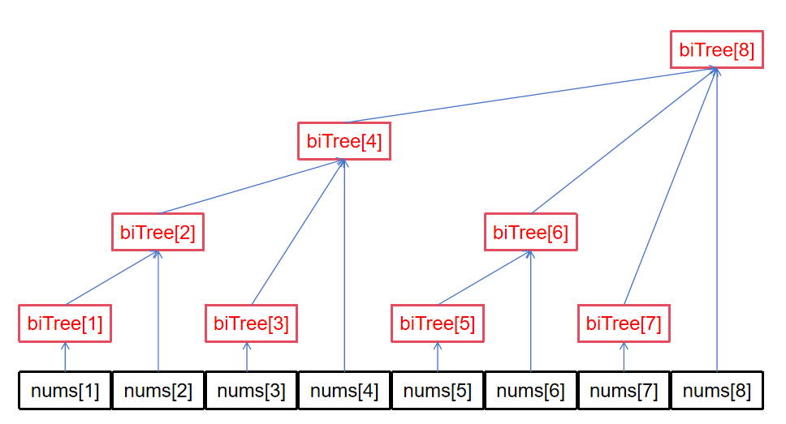

树状数组，也称作二叉索引树(Binary Indexed Tree)或 Fenwick 树。 它可以在 \(O(\log n)\) 的时间复杂度下实现单点修改与区间查询两个操作。
参考自 OI wiki。
无特殊说明，本文所有数组下标均从 1 开始。
前缀和
初学者最先接触到的支持区间查询的数据结构就是前缀和数组了，对于原始数组
nums 而言，对应的前缀和数组 prefixSum
满足：
\[ \text{prefixSum}[i] = \sum\limits_{j=1}^{i}\text{nums}[j] \]
区间查询
如果想求区间 nums[a:b] 之和，只需简单的进行
prefixSum[b]-prefixSum[a-1] 即可。对于一个已经构建好的
prefixSum 而言，其区间查询时间复杂度为
\(O(1)\)。
单点修改
然而，prefixSum
的单点修改却不如人意，如果修改了
nums[i]，需要将 prefixSum 中区间
[i:n] 的所有值均修改一遍，这样子时间复杂度为 \(O(n)\)。
现实场景下的操作往往是动态的，特别是某些数据库中需要进行大量的写操作。如果该写频繁数据库中维护区间和采用的是前缀和的做法，那么它一定活不过压测😒。
思考
根据上文可知，写是前缀和的根本劣势，一旦写操作极度频繁，对于海量数据而言，时间开销将会非常大。究其原因，还是在于
prefixSum
中的每个元素都出现了冲突的管辖范围，负载并不均衡，最极端的，第一个元素
nums[1] 几乎被所有的 prefixSum[i]
计算了一遍，而最后一个元素 nums[n]
却仅仅参与了一次计算。
如果能将这一冗余计算进行减负，说不定能提高一点性能？
树状数组
树状数组的本质思想在于分治，即将原始数组不断划分为等长的区间
nums[1 : n/2] 与 nums[n/2+1 : n]，分别由
biTree[n/2] 与 biTree[n]
去管辖这两个区间。这样一来，每个子区间中进行的写并不会给其他区间增加负载，而求前缀和只需将多个区间和相加即可。
“既然最后整个区间和就是
biTree[n/2] + biTree[n]，那不如让 biTree[n]
干脆管整个区间好了！”
于是，整个区间的管辖级别就浮现出来了，以 n=8 为例：

由于这种管辖级别像树一样，所以就叫树状数组了。
例
对于原始数组
nums[] = {1, 0, 1, 2, 3, 7, 100, 5}而言，对应的树状数组biTree结果为：
i 求和序列 结果 1 nums[1]1 2 nums[1] + nums[2]1 3 nums[3]1 4 nums[1] + ... + nums[4]4 5 nums[5]3 6 nums[5] + nums[6]10 7 nums[7]100 8 nums[1] + ... + nums[8]119
区间查询
先来看看树状数组的读性能如何。对于原始数组
nums，为了求其 nums[1:i]
之和，则要考虑怎么取树状数组中的区间。
刚开始，我们或许很难直接得出一个合适的公式，那不妨找找规律：
| i | 求和序列 | 对应二进制 |
|---|---|---|
| 1 | biTree[1] |
0001 => 0001 |
| 2 | biTree[2] |
0010 => 0010 |
| 3 | biTree[3] + biTree[2] |
0011 => 0011 + 0010 |
| 4 | biTree[4] |
0100 => 0100 |
| 5 | biTree[5] + biTree[4] |
0101 => 0101 + 0100 |
| 6 | biTree[6] + biTree[4] |
0110 => 0110 + 0100 |
| 7 | biTree[7] + biTree[6] + biTree[4] |
0111 => 0111 + 0110 + 0100 |
| 8 | biTree[8] |
1000 => 1000 |
我们发现：
- 只需要不断地将
i对应二进制最后一个1移除，直至剩下只有一个将所有生成的数对应的区间相加，就是想要的结果；1的时候（如果令biTree[0] = 0，甚至不用考虑这一点）， i对应二进制最后一个1后面的0越多，biTree[i]的“管辖范围”也越大；
事情的本质逐渐浮现，似乎一切都与“二进制的最后一个 1”扯上了关系。
lowbit(x)
lowbit(x) 是一种用于快速找出数 x
对应二进制最后一个 1 的位置，其表达式为：
\[ \text{lowbit}(x) = x\ \&\ (-x) \]
以 10 为例，其二进制为 01010，而
-10 的二进制为
10110，两者进行按位与运算后所得结果为
00010，也就是 10 的最后一个
1。
毕竟补码是取反码然后 +1，对于
...100...000而言，其反码为...011...111，再加一得到...100...000，而高位全部取反，那么进行按位与后只有最后一个1会剩下。
结论
根据上面的理论，只要不断把最后一个 1
去掉就行，那么可以得到这样一个实现区间查询的函数：
1 | // rangeQuery returns the sum of nums from 1 to n |
时间复杂度为 n 对应二进制中 1 的个数，即
\(O(\log n)\)
单点修改
如果对某个 nums[i] 进行了修改，则需要将所有管辖该元素的
biTree[j]——即数组树中的父节点——也进行修改，这样才能保证一致性。
从子节点定位到直接父节点的方法与上面的恰好相反：
1 | void update(int n, int delte) { |
也很容易得以验证。时间复杂度为 \(O(\log n)\)。
应用
传送门：